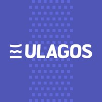
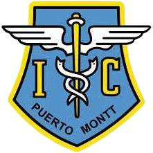

Hola soy Yerco y estoy en busca de mi primer trabajo en el área de la información automática.
Durante mi formación profesional como Ingeniero Civíl en Informática adquirí conocimientos en diversos lenguajes de programación, sistemas de gestión de bases de datos y metodologías para la planificación y desarrollo de software.
Soy capaz de trabajar de forma autónoma y planificada, me considero alguien autocritico, proactivo y con capacidad de liderazgo y estoy motivado por ser parte de alguna empresa y adquirir experiencia y conocimientos sobre nuevas tecnologías 📈💻💪.
💚 Tengo interés en el área de Desarrollo Web o Desarrollo de Software y poder adquirir las buenas prácticas de los desarrolladores con mayor experiencia.
💚 Tengo interés en el análisis de datos, transformar datos en información y poder desarrollar herramientas que mejoren la toma de decisiones.
Desarrollo de “Herramienta para la estimación y visualización de la evapotranspiración en cuencas de la Región de Los Lagos” :
Desarrollo de prototipo para desarrollo de plataforma logística para Terminal de carga de Navimag :
Gestión de página web de la carrera de Ingeniería Ambiental Campus Puerto Montt en CMS Joomla :
Creación y administración de bases de datos en Instituto Tecnológico del Salmón INTESAL :
Desarrollo de “Herramienta para la estimación y visualización de la evapotranspiración en cuencas de la Región de Los Lagos” :


y no menos importantes . . .
Hecho por mí mismo ♥
Copyright © 2022 YRM.